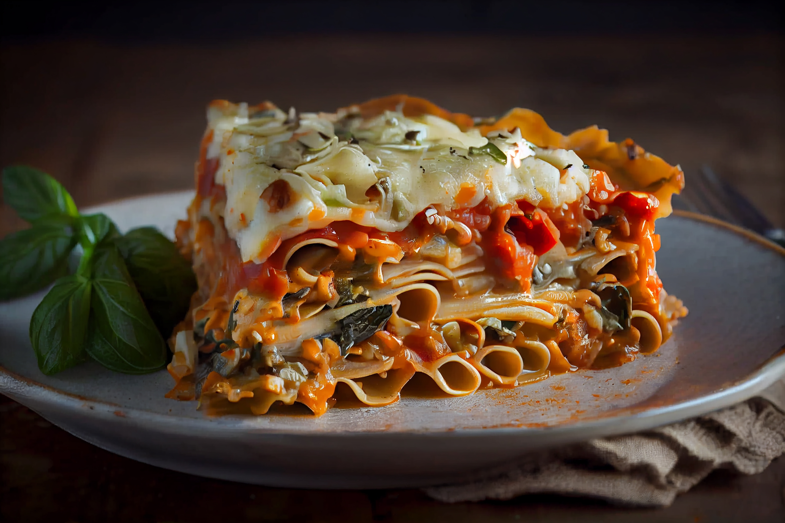

Home
Lasgana

Description
Lasagna is a classic Italian comfort food made with layers of pasta, rich meat sauce, creamy béchamel or ricotta, and melted cheese. It’s perfect for family dinners, special occasions, or meal prepping ahead of time.
Ingredients
- 2 tbsp olive oil
- 1 onion, finely chopped
- 2 garlic cloves, minced
- 500 g ground beef
- 2 tbsp tomato paste
- 1 tsp dried oregano
- 1 tsp dried basil
- Salt and pepper to taste
- 250 g ricotta cheese
- 1 egg
- 50 g grated Parmesan cheese
- 9 or 12 lasagna sheets (pre-cooked or oven-ready)
- 250 g mozzarella cheese, shredded
- Fresh basil leaves (optional, for garnish)
Steps
- Prepare the meat sauce
Heat olive oil in a large pan. Add onion and garlic, sauté until softened. Add the ground beef, cook until browned. Stir in crushed tomatoes, tomato paste, oregano, basil, salt, and pepper. Simmer for 20- 25 minutes.
- Mix the cheese filling
In a bowl, combine ricotta cheese, egg, and Parmesan. Mix until smooth.
- Preheat the oven
Set your oven to 180°C (350°F).
- Assemble the lasagna
- Spread a thin layer of meat sauce on the bottom of a baking dish.
- Place a layer of lasagna sheets on top.
- pread some ricotta mixture over the pasta.
- Sprinkle mozzarella cheese.
- Repeat layers (sauce → pasta → ricotta → mozzarella) until ingredients are used up.
- Finish with meat sauce and a generous topping of mozzarella.
- Cover with foil and bake for 25 minutes. Remove foil and bake an additional 20 minutes until golden and bubbly.
- Let the lasagna rest for 10 minutes before slicing. Garnish with fresh basil if desired.